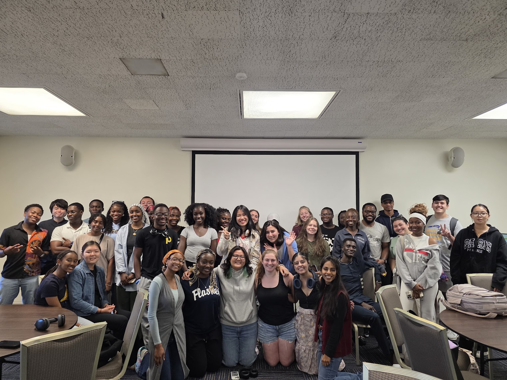

International Student Council
Moments Collected
A small album from my work with the International Student Council at Kent State, celebrating the people, programs, and everyday moments that make community feel real.

ISC album
International Student Council
A small album from my work with the International Student Council at Kent State, celebrating the people, programs, and everyday moments that make community feel real.

ISC album